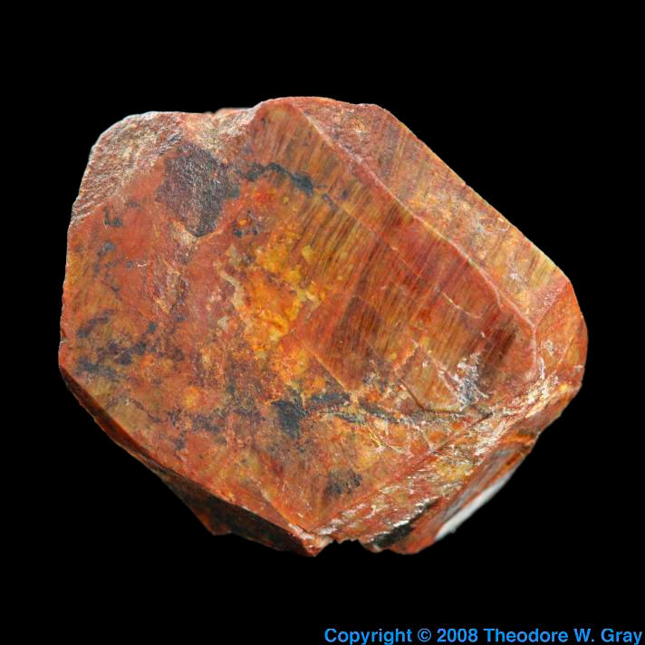

- 1. Meet Thorium
- — About the element, the raw material.
- 2. Thorium is Here
- — Presence, energy efficiency and mining advantages
- 3. Thorium is Innocent
- — Acknowledgement of nuclear fears, but thorium is not weaponizable.
- 4. Thorium is Clean
- — Nuclear Waste
- 5. Thorium is Safe
- — Acknowledgement of nuclear reactor meltdown, and why MSRE are safe.
- 6. Join the Thorium Worship
- — Bibliography
Meet Thorium
Thorium is Here
Thorium is Innocent
Thorium is Clean
Thorium is Safe
Inform yourself and Join the Thorium Cult.
Nuclear power was headed for something of a resurgence a few years back, but then the 2011 meltdown
at Japan's Fukushima reactor happened. Governments and investors around the world got cold feet, but
there's now renewed interest in a type of nuclear power that's potentially much safer.
You need different fissile material if you're going to change any of that,
and now we come to thorium.
Thorium is silvery and tarnishes black when it is exposed to air, forming thorium dioxide;
it is moderately hard, malleable, and has a high melting point. Thorium is an electropositive
actinide whose chemistry is dominated by the +4 oxidation state; it is quite reactive and
can ignite in air when finely divided.The most stable isotope, 232Th, has a half-life
of 14.05 billion years, or about the age of the universe;
On Earth, thorium, bismuth, and uranium are the only three radioactive elements
that still occur naturally in large quantities as primordial elements.Thorium is
estimated to be over three times as abundant as uranium in the Earth's crust, and
is chiefly refined from monazite sands as a by-product of extracting rare-earth metals.
Th-232, U-235 and U-238 are primordial nuclides,
having existed in their current form for over 4.5 billion years,
predating the formation of the Earth; they were forged in the cores
of dying stars through the r-process and scattered across the galaxy
by supernovas. Their radioactive decay produces about half of the Earth's internal heat.
if you're going to change any of that, and now we come to thorium
(atomic number 90). It is estimated that one ton of thorium
can produce as much energy as 35 tons of uranium in a liquid fluoride thorium
reactor. Conventional reactors utilizes less than one percent of uranium,
whereas a well working reprocessing reactor can utilize 99% of its thorium fuel.
Thorium is safer and more efficient to mine than uranium, thus making it more environmentally
friendly.The percentage of thorium found in its ore is generally greater than the
percentage of uranium found in its ore, so it is more cost-efficient.
Thorium mines has
an open pit which does not require ventilation, whereas uranium mines is closed off where
the radon level reach potentially dangerous levels. Moreover, as thorium is very abundant in
Earth's crust there would be no
neccesity to open thorium mines since we already mine and discard it as secondary mining products of other
underground valuables such as cobalt, nickel, manganese, copper, etc.
As you may recall, research into the mechanization of nuclear reactions was
initially driven not by the desire to make energy, but by the desire to make
bombs. The $2-billion Manhattan Project that produced the atomic bomb sparked
a worldwide surge in nuclear research, most of it funded by governments embroiled
in the Cold War. And here we come to it:
Thorium reactors do not produce plutonium,
which is what you need to make a nuke.
The history of nuclear power is atrocious. But thorium was an alternative, not a collaborator.
There is up to two orders of magnitude less of nuclear waste in the liquid
fluoride thorium reactor, eliminating the need for large scale and long term
storage for the waste. This is because the Thorium-Uranium fuel cycle does
not irradiate U-238, so it does not produce atoms bigger
than uranium. Furthermore
it takes a couple hundred of years for the radioactivity of the waste to drop to
safe levels, whereas it take tens of thousands of years for current nuclear waste
to drop to safe level.
Here's how it works. When Th232 absorbs a neutron it becomes Th233, which is
unstable and decays into protactinium-233 and then into U233. That's the same
uranium isotope we use in reactors now as a nuclear fuel, the one that is fissile
all on its own. Thankfully, it is also relatively long lived, which means at
this point in the cycle the irradiated fuel can be unloaded from the reactor
and the U233 separated from the remaining thorium. The uranium is then fed
into another reactor all on its own, to generate energy.
With uranium reactors it's the U238,
turned into U239 by absorbing some of those high-flying neutrons, that produces
all the highly radioactive waste products. With thorium, the U233 is isolated
and the result is far fewer highly radioactive, long-lived byproducts.
Thorium nuclear waste only stays radioactive for 500 years, instead of 10,000,
and there is 1,000 to 10,000 times less of it as well.
The International Atomic Energy Agency said molten salt reactors operate at
higher temperatures, making them more efficient in generating electricity,
while their low operating pressure can reduce the risk of coolant loss,
a major accident risk. The liquid fuel acts as as both the source of energy and
coolant, so even in a unexpected situation the core cannot overheat. Meltdowns are unthinkable.
Research on MSRs is underway at the High Flux Reactor at Petten in the
Netherlands, where the Nuclear Research and Consultancy Group (NRG) is collaborating
with the European Commission's Joint Research Centre (JRC) in Karlsruhe.
So, should we invest in thorium? Yes. How?
There are very few investment vehicles. Most thorium research and development is
conducted by national research groups, however you can show your support by
posting on social media and spreading awareness.
Bibliography and Further Reading
-
Wikipedia for general introductions about
Thorium and
Molten Salt Reactors
-
Thorium Energy Viability, Jason Ting, article submited to Standford University November 12, 2015
-
About recent research developments,
Article published, 24 September 2019 in the Nuclear Engenering Magazine
-
About the dangers of Uranium mining, published by Joseph Sorrentino in "In These Times" magazine
-
Pop Science article on the topic by Casey Research, published on February 14, 2012
- Side effects of radiation documented by
the Nuclear Weapon Archive
-
Footage from Nuclear Weapons Test from
Atomic Trinity Website
-
Further documentation on nuclear testing by
American National Security Archives
Cult follower Liane showing her pro-testing alliance to thorium.
First functioning prototype of a MSRE at Oak Ridge Laboratories, 1963

Cult follower Rosie performing a light ritual, posted in
pro-test.
Cult follower Sofi worshipes the safe light (thorium cannot be weaponized), posted in pro-test.
Cult follower Vika worshipes the safe light (thorium does not need to be mined), posted in pro-test.

Cult follower Alex worshipes the eerie blue light (thorium reactors glow blue), posted in
pro-test.
Cult follower Oxana joins the Thorium Cult, posted in pro-test.
Cult follower Lena joins the Thorium Cult, posted in pro-test.
Cult follower Malani joins the Thorium Cult, posted in pro-test.
Cult follower Nina joins the Thorium Cult, posted in pro-test.
Cult follower Carmen joins the Thorium Cult, posted in pro-test.
Thorite, a thorium mineral, under magnification.

Mineral stone formation with thorium present.
Unoxidized metallic thorium.
The striking flash of light produced by the Baker explosion. (NARA, Still Pictures Unit, Record Group 80-G, box 1724, folder 422320-422386)
A worker drills for uranium in Church Rock Mine, N.M., circa 1980. (Courtesy Post '71 Uranium Workers Committee)
"Fizeau" test, Nevada Test Site, 14 Sept 1957.

This famous video clip is from a Civil Defense Effects test at the Nevada Test Site. It first shows the test house with the tower holding the nuclear device in the background. Then the effects of the detonation are shown.
NRG started irradiating samples of molten salt fuel in the High Flux Reactor 2015 (Photo: NRG)